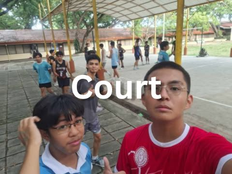
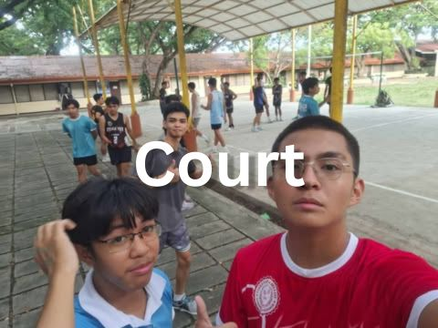

Hello! I am Sech Surban, A 1st year Computer Science student. I am passionate about computers ever since I was a child. Both of my parents influenced me on technology since they too are passionate about anything tech! My hobbies are playing video games, video editing, and trying to improve myself one day at the time.